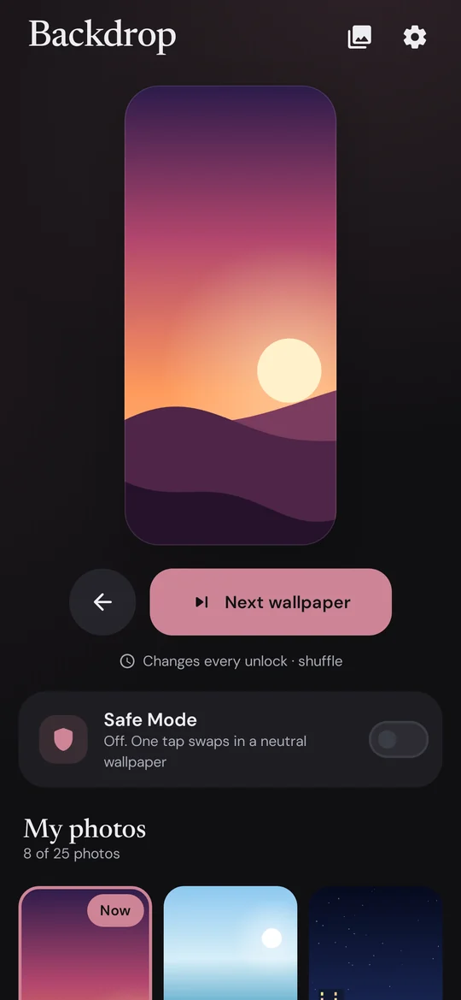
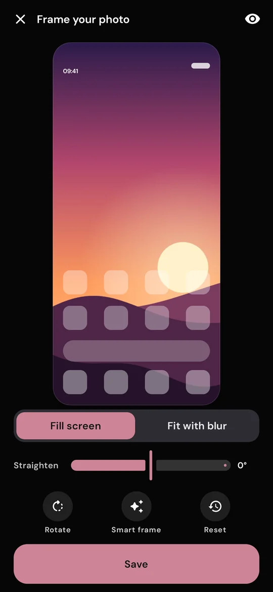
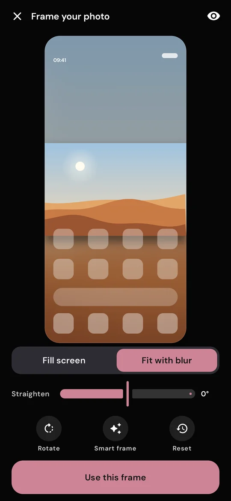
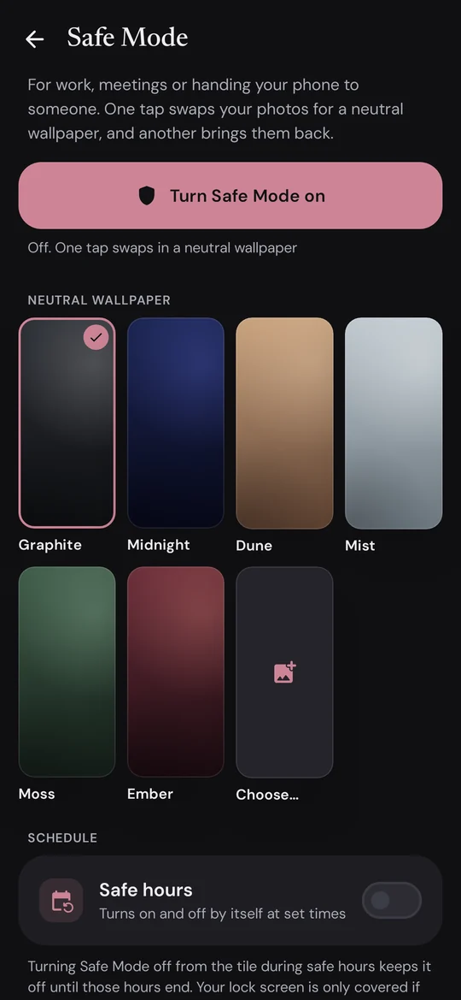
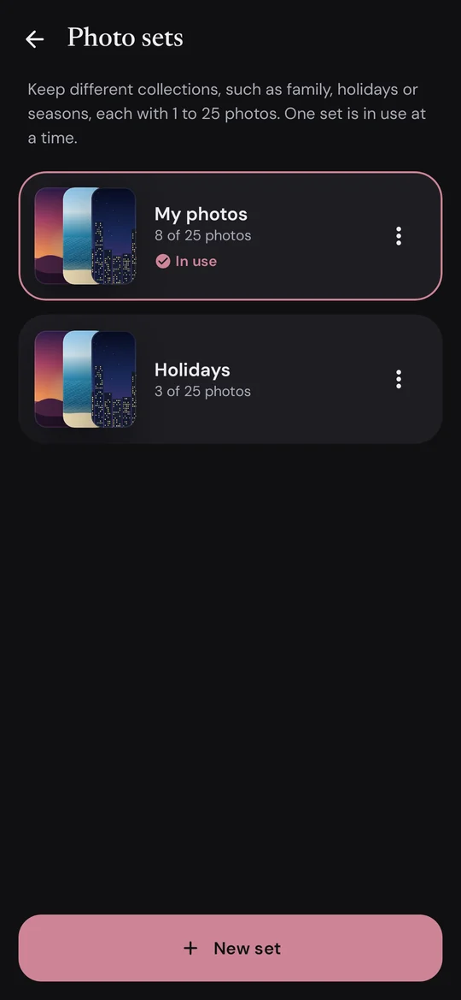
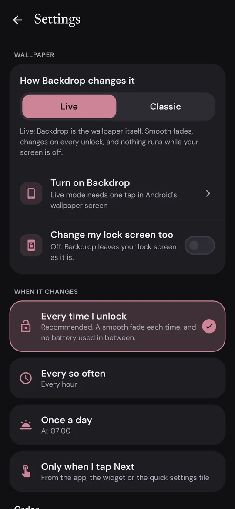

Your photos. Your screen. Nobody else’s business.
Backdrop is a wallpaper changer for Android. Choose 1 to 25 of your own photos, frame each one perfectly as you add it, and a new one fades in every time you unlock.
It is free, with no adverts and no account. It sees only the photos you pick, keeps encrypted copies with the hidden details removed, and cannot go online.
Free, with nothing to unlock. Android 8 or later. Version 1.0, 2.5 MB. Release notes
Chrome may say the file might be harmful. It shows this for app files that do not come from Google Play. Choose Download anyway, open the file, and allow your browser to install apps if Android asks.
How it works
Three short steps the first time, then it looks after itself.
Choose your photos
Pick 1 to 25 in Android’s own photo picker. Backdrop makes private, encrypted copies and removes location, date and camera details.
Frame each one
Every photo opens in Frame your photo, already framed by Smart frame. Crop it, straighten it, or fit a landscape photo over a blurred fill.
Pick when it changes
Every unlock, every so often, once a day or only when you tap Next. Shuffle, in order or random.
What it looks like
Dark, calm and uncluttered, with an accent colour taken from the photo on your screen, so the app always matches your wallpaper. A light theme is there too.

HomeThe photo on your screen now, Back and Next, Safe Mode, and your set. 
Frame your photoCrop, zoom, straighten and rotate, with a pretend home screen on top. 
Fit with blurA whole landscape photo over a soft, blurred fill. 
Safe ModeSix neutral wallpapers or your own, on a tap or on a schedule. 
Photo setsKeep different collections and switch between them. 
SettingsLive or Classic, when it changes, and the order.
Everything is in, and all of it is free
Built to be the best at one job: putting your own photos on your screen, beautifully, without giving anything away.
- 1 to 25 photos per set
- Pick anything from one photo to twenty-five. Keep as many sets as you like, such as Family, Holidays or Seasons, and switch between them in a tap.
- Changes every time you unlock
- In Live mode Backdrop is the wallpaper itself, so a new photo fades in the moment you unlock, with nothing running while the screen is off.
- Or on a timer, or once a day
- Every 15 minutes to every 24 hours, once a day at a time you choose, or only when you tap Next.
- Shuffle without repeats
- Every photo shows once before any repeats, and a new round never starts with the one you just saw. In order and fully random are there too.
- Crop on adding
- Each photo opens in the framing editor as you add it, already framed by Smart frame, which looks for faces and the busiest part of the picture.
- Landscape photos, handled
- Crop a landscape photo to the shape of your screen, or show all of it with Fit with blur: the photo floats over a soft, blurred copy of itself.
- Straighten and rotate
- Drag, pinch and twist with two fingers, or use the straighten slider. A fake clock and app icons show exactly what will sit on top of your photo.
- Lock screen, if you want it
- Changing the lock screen is optional and starts off. Turn it on and each photo can go on the home screen, the lock screen or both, framed separately.
- Safe Mode
- One tap swaps your photos for a calm neutral wallpaper, from the app, the widget or the quick settings tile. Schedule it for working hours if you like.
- Favourites, day and night
- Favourites show about twice as often. Mark a photo for day or night only, or skip it once. Live mode can dim the wallpaper at night.
- A widget and two tiles
- The widget shows the photo on your screen now, with Back, Next and Safe Mode. Quick settings tiles give you Next and Safe Mode from anywhere.
- App lock and backups
- Lock Backdrop with your fingerprint or a PIN, and save one encrypted backup file, protected by a password you choose, to move to a new phone.
What it asks of your phone
Backdrop has no access to the internet. Everything it can reach is listed here, with what it does and what it never does.
| Access | What Backdrop does with it | What it never does |
|---|---|---|
| Set wallpaper | Puts your photos on the home screen, and on the lock screen if you turn that on. | Change your wallpaper at any other time, or touch anything else on your phone. |
| Photos you pick | Receives only the photos you choose in Android’s photo picker, and keeps private, encrypted copies. | See the rest of your gallery, or change or delete your originals. |
| Starting after a restart | Puts the timer, the once-a-day change and Safe Mode hours back after the phone restarts or the clock changes. | Run in the background between changes. |
| Battery: Unrestricted | Lets changes happen on time on phones that pause apps. Only if you allow it. | Use the battery while nothing is changing. |
| Alarms and reminders | Switches Safe Mode at the exact minute. Only if you allow it. | Make a sound, or show a notification. |
| Fingerprint or face | Unlocks the app, if you turn the app lock on. | See or store your fingerprint. Android keeps that to itself. |
| A file you pick | Saves or reads a backup where you choose. | Look at anything else in your storage. |
| Internet access | None. The app does not ask for it. | Send your photos or anything else off your phone. |
The detail is in the privacy policy.
Private by design
It cannot go online
The app does not hold Android’s internet permission, so it has no way to send anything anywhere.
Only the photos you pick
Android’s photo picker hands over just the photos you choose. They are copied, stripped of hidden details and encrypted on your phone.
Safe when others look
Safe Mode, home-screen-only photos and an app lock keep your pictures to yourself when someone else sees your phone.
Questions
Is Backdrop really free?
Yes. There is no paid version, no subscription, no trial and no adverts, and nothing in the app is locked.
Is it on Google Play?
No. Backdrop is a personal project and is downloaded from this site as an Android app file. It needs Android 8 or later, which covers almost every phone in use.
Does it need the internet?
No. The app does not ask Android for internet access at all, so it cannot go online. Check for updates opens this site in your browser instead.
Can it see all my photos?
No. It uses Android’s own photo picker, so it only ever receives the photos you choose. It does not ask for permission to read your gallery.
Where are my photos kept?
Backdrop makes its own copies in the app’s private storage, encrypted with a key held by Android, with location, date and camera details removed. Your originals in the gallery are never changed.
Why is it a live wallpaper?
So it can fade to a new photo every time you unlock without anything running in the background. If you would rather not, Classic mode sets ordinary wallpapers on a timer or once a day.
Why didn’t my lock screen change?
Changing the lock screen is optional and starts off. Turn on Change my lock screen too in Settings. Samsung lock screens can’t show another app’s live wallpaper, so Backdrop sets the lock screen the ordinary way and it changes for the next time you lock.
Why are changes late?
Some phones, Samsung especially, pause apps to save battery. Set Backdrop’s battery use to Unrestricted; the app takes you there during setup. In Live mode it matters less, because changes happen as you unlock.
What if I forget my PIN?
There is no way round the PIN, not even for the developer. Clear the app’s storage in your phone’s settings, which deletes everything in it, and then restore your latest backup.
How do I move to a new phone?
In Settings, choose Save a backup and set a password. Install Backdrop on the new phone, choose Restore a backup and enter the same password.
Who made it?
Backdrop is made by Jonathan Jackson, an independent developer in the United Kingdom. It is not connected with Google, Samsung or any other app maker.